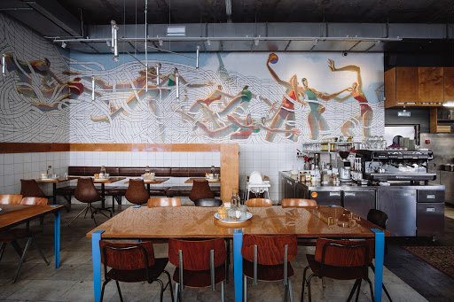
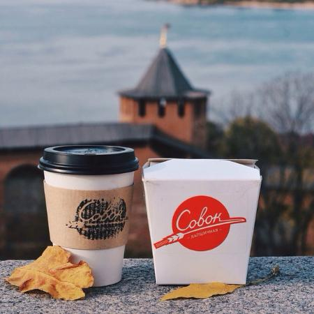
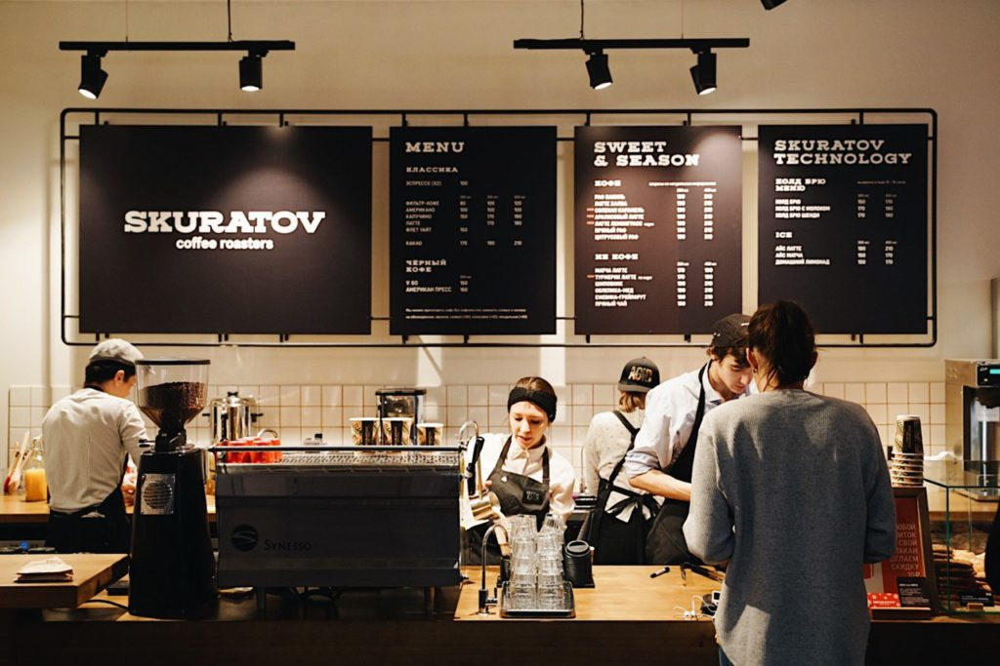
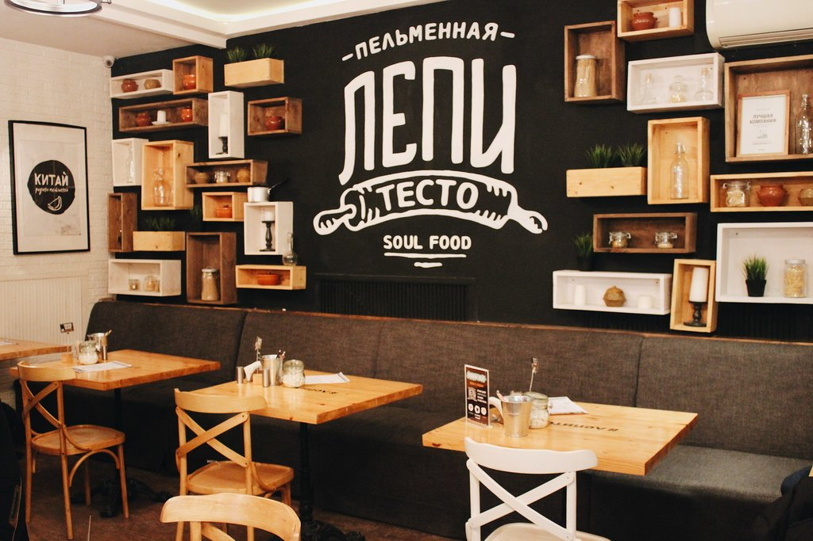
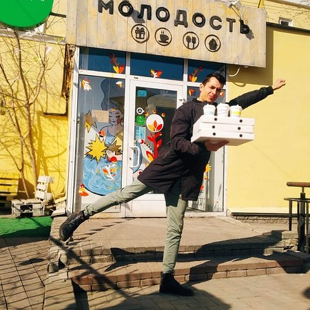
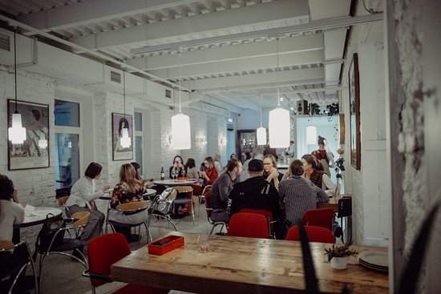

Пастарама

Пастарама- это ресторан формата fast casual. Делая заказ, Вы выбираете форму пасты и соус к ней. Помимо пасты в ресторане есть салаты, супы, закуски в постоянном меню и специальные блюда выходного дня от шефа. Идеально подходит для семейного обеда или ужина. https://salutandco.com/
Совок

Концепция заведения угадывается из названия — ностальгия по советскому прошлому встречается здесь с любовью к китайскому стритфуду. Готовят в кафе исключительно воки, а называют их исключительно лапшой.
https://salutandco.com/
Кофейня Skuratov

Кофейни Skuratov открыты в нескольких городах страны, от Москвы и Казани до собственно Омска, откуда они родом. В Нижнем Новгороде их две. В «Скуратове» очень тщательно следят за качеством кофе: сами обжаривают зерна и делают сиропы. Есть кофе на растительном молоке и авторские рецепты, ассортимент обновляется по сезону. «Скуратов» поддерживает активную образовательную программу: в кофейнях бывают каппинги, лекции, экологические акции и даже небольшие театральные инди-проекты. https://skuratovcoffee.ru/
Пельменная «Лепи тесто»

Домашние пельмени и вареники с самыми разнообразными начинками — как мясными и рыбными, так и сладкими. Кроме того, здесь можно попробовать вкуснейшие домашние лимонады. Причём каждый пришедший может собственными глазами увидеть, как готовятся блюда.https://www.instagram.com/lepi_testo/?hl=ru
Кафе «Молодость»

МОЛОДОСТЬ - это hand made кафе, где готовят авторскую еду без усилителей вкуса, добавок и покупных соусов. Кроме еды, в кафе продают подарки, украшения и посуду, сделанные своими руками.
https://molodostnn.postershop.me/
Ресторан Юла Pizza

Впервые в Нижнем Новгороде авторы проекта предлагают гостям традиционную неаполитанскую пиццу, приготовленную в дровяной печи при экстремально высокой температуре.
https://salutandco.com/